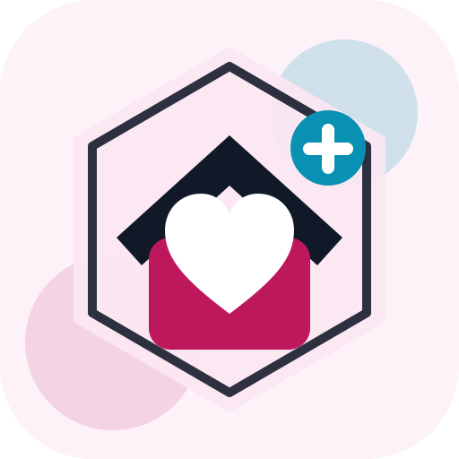

Health And Care / Home Care / Home Health.

Valley Verified profile
Devoted Guardians Home Care & Homehealth
Devoted Guardians Home Care & Homehealth gives patients, families seeking care, and local Phoenix-area residents a practical Tempe connection for Home Care / Home Health, Health Care / Home Care / Home Health, Health Care, and Home care provider / public phone listed. The page focuses on services, audience, location, contact path, and the public evidence that makes the business useful in a Valley Verified shortlist.
English.
Contact directly for availability, scope, and pricing.
Directory profile last reviewed May 19, 2026 from a public Phoenix Chamber health care listing.
Home care provider / public phone listed.
Tempe, AZ 85284.
Valley Verified read
Why Skyes Over London Says This Business Is Valley Verified
Devoted Guardians Home Care & Homehealth earns this Valley Verified placement because public business evidence connects a real home care / home health operation to 1705 W. Ruby Drive #107, Tempe, AZ 85284 and (480) 999-3012. Greater Phoenix Chamber directory evidence supports this local profile. For patients, families seeking care, and local Phoenix-area residents, the page gives concrete local utility: services, audience, location, contact path, and the reason this business belongs in a buyer-ready Valley shortlist.
ServicesHome Care / Home Health, Health Care / Home Care / Home Health, Health Care, and Home care provider / public phone listed
Audiencepatients, families seeking care, and local Phoenix-area residents
Local proof1705 W. Ruby Drive #107, Tempe, AZ 85284; (480) 999-3012
Greater Phoenix Chamber directory evidence supports this local profile.